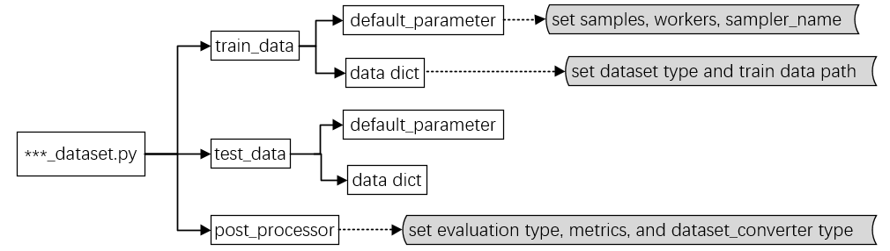
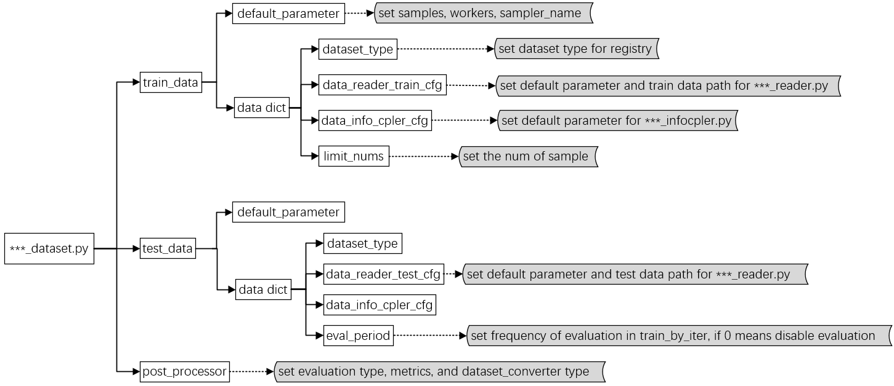

Tutorial 2: Customize Datasets
There are two choices when you customize dataset:
use the dataset read and process module of the source code;
use MIX-Kalman dataset read and process module.
Next, we will introduce two cases in detail. There must be three steps in either case.
Download dataset files;
Prepare the dataset config file;
Prepare dataset process pipeline.
Customize dataset in source code
Download dataset files
Download the related data files of the source code. Use LXMERT model and VQA task as an example, we download the train.json, trainval_ans2label.json, train2014_obj36.tsv and so on. And then we put all those files outside the project directory and symlink the dataset root to MIX-Kalman/configs/_base_/datasets/lxmert/lxmert_vqa.py.
Prepare the dataset config file
Each dataset config file should include three basic elements: train_data, test_data, post_processor.
The structure dataset configuration and the function of each part are as follows：

You should write the dataset configuration to the expected format above and save it in the MIX-Kalman/configs/_base_/datasets/lxmert/lxmert_vqa.py.
Dataset process pipeline
Use the source code data read and process module (i.emixk/models/vqa_models/lxmert/datasets/lxmert_vqa.py).
There are some key point you should do before using the functions of the class in source code:
import the
DATASETSregister;decorate the dataset class by
@DATASETS.register_module()to register it;
from mixk.data.builder import DATASETS # import the DATASETS register
@DATASETS.register_module()
class VQATorchDataset(Dataset):
def __init__(self, reader):
...
def __len__(self):
return len(self.data)
def __getitem__(self, item: int):
...
return item
add your dataset type in the
mixk/data/_init_.pybefore use it;
import ...
__all__ = [
'VQATorchDataset', # add the dataset_type in the list
...
]
Customize dataset in MIX-Kalman
Download dataset files
In MIX-Kalman, we directly use the extracted data files refer to the source code paper.
Use VQA dataset as an example, we download the trainval2014.lmdb, imdb_train2014.npy, imdb_minival2014.npy and etc. And then we put all those files outside the project directory and symlink the dataset root to MIX-Kalman/configs/_base_/datasets.
Prepare the dataset config file
Each dataset config file should include three basic elements: train_data, test_data, post_processor.
The structure of MIX-Kalman dataset configuration and the function of each part are as follows：

Note: In MIX-Kalman, thedata_info_cpler_cfg is used for data preprocessing.
You should write the dataset configuration to the expected format above and save it in the MIX-Kalman/configs/_base_/datasets/your_dataset.py. The file path is as below:
MIX-Kalman
├── configs
│ ├── _base_
│ │ ├── datasets
│ │ │ ├── vqa_dataset.py
│ │ │ ├── your_dataset.py
│ │ │ ├── ...
An example of data configuration
To help the users have a basic idea of a complete dataset config, we make brief comments on the VQA dataset config as the following.
# set dataset type for registry
dataset_type = 'VQADATASET'
# set dataset path for root, feature, annotation, vocab, etc
data_root = 'your_path'
...
# set dataset category, like ‘train’, ‘minival’, etc
train_datasets = ['train']
...
# set default parameter and train data path for vqa_reader.py
vqa_reader_train_cfg = dict(
type='VQAReader',
card='default',
mix_features=dict(
train=data_root + feature_default_path + 'trainval2014.lmdb',
...),
...
datasets=train_datasets,
if_global=False,
)
# set default parameter and test data for vqa_reader.py
vqa_reader_test_cfg = dict(...)
# set default parameter and test data for vqa_infocpler.py
vqa_info_cpler_cfg = dict(...)
# set default config for train data
train_data = dict(
samples_per_gpu=8,
workers_per_gpu=1,
sampler_name='TrainingSampler',
data=dict(type=dataset_type, reader=vqa_reader_train_cfg, info_cpler=vqa_info_cpler_cfg, limit_nums=2000))
# set default config for test data
test_data = dict(...) # eval_period set to 0 to disable
# set default config for post_processor, like evaluation type, metrics, and dataset_converter type
post_processor = dict(
type='Evaluator', metrics=[dict(type='VQAAccuracyMetric')], dataset_converters=[dict(type='VQADatasetConverter')])
Dataset process pipeline
The dataset will be prepared ready for train or test by several modules with the configs in ***_dataset.py, use train mode as an example:
register the type by
registry.py, including dataset type, data_reader_train_cfg type, data_info_cpler type in***_dataset.py;prepare the data for train by
***_loader.py:get the params of the
***_reader_train_cfgand load the feature and annotation from disk to memory by***_reader.py;get the params of the
***_info_cpler_cfgand preprocess these data in***_infocpler.py;choose the specific data items for different tasks.
There you should customize three necessary files: ***_loader.py, ***_reader.py and ***_infocpler.py in the process.
The data file structure is as below (use VQA dataset as an example in the following content, the necessary files include vqa_loader.py, vqa_reader.py, and vqa_infocpler.py.):
MIX-Kalman
├── configs
├── mixk
│ ├── data
│ │ ├── _init_.py
│ │ ├── loaders
│ │ │ ├── vqa_loader.py
│ │ ├── reader
│ │ │ ├── _init_.py
│ │ │ ├── vqa_reader.py
│ │ ├── infocomp
│ │ │ ├── _init_.py
│ │ │ ├── vqa_infocpler.py
│ ├── ...
├── ...
add dataset_loader.py
build your dataset_loader.py as vqa_loader.py, the key point is as follows:
import the VQAReader and VQAInfoCpler in the
mixk/data/loaders/vqa_loader.py;the class
VQADATASETshould inherit from the parent classBaseLoaderand register the dataset by decorator@DATASETS.register_module();writer the specific item dictionary in the
__getitem__()function according to different task.
# import datasetReader and datasetInfoCpler
from ..reader.vqa_reader import VQAReader as Reader
from ..infocomp.vqa_infocpler import VQAInfoCpler as InfoCpler
#register your dataset module
@DATASETS.register_module()
class VQADATASET(BaseLoader):
def __init__(self, reader, info_cpler, limit_nums=None):
super().__init__(Reader, reader, InfoCpler, info_cpler, limit_nums)
def __getitem__(self, idx):
item_feature = self.reader[idx]
item_feature = self.infocpler.completeInfo(item_feature)
# choose the items for different tasks
item = {...}
return item
add your dataset type in the
mixk/data/_init_.pybefore use it;
from .builder import build_mixk_test_loader, build_mixk_train_loader
from .loaders.vqa_loader import VQADATASET
import ...
__all__ = [
'VQADATASET', # add the dataset_type in the list
...
]
add dataset_reader.py
Import the dataset reader class in the
mixk/data/reader/_init_.py;
from .vqa_reader import VQAReader
build your dataset_reader.py as vqa_reader.py, the key point is as follows:
the
VQAReadershould inherit from the parent classmixkDataReader. It will read the parameters of thevqa_reader_train_cfgin the parent class;write the
__getitem__()function according to different task.
from .base_reader import mixkDataReader
...
# inherit from the parent class
class VQAReader(mixkDataReader):
def __init__(self, cfg):
super().__init__(cfg) # get the params of the `vqa_reader_train_cfg`
def __len__(self):
return len(self.mix_annotations)
# writer the getitem function according to different task.
def __getitem__(self, item):
...
return item_feature
add dataset_infocpler.py
Import the dataset infocpler class in the mixk/data/infocomp/_init_.py.
from .vqa_infocpler import VQAInfoCpler
build your dataset_infocpler.py as vqa_infocpler.py, the key point is as follows:
the
VQAInfoCplershould inherit from the parent classBaseInfoCpler. It will read the parameters of thevqa_info_cpler_cfgin the parent class;write
completeInfofunction according to different task.
from .base_infocpler import BaseInfoCpler
...
# inherit from the parent class
class VQAInfoCpler(BaseInfoCpler):
def __init__(self, cfg):
super().__init__(cfg) # get the params of the `vqa_info_cpler_cfg` and preprocess the data
# writer completeInfo function according to different task
def completeInfo(self, item_feature: ItemFeature):
...